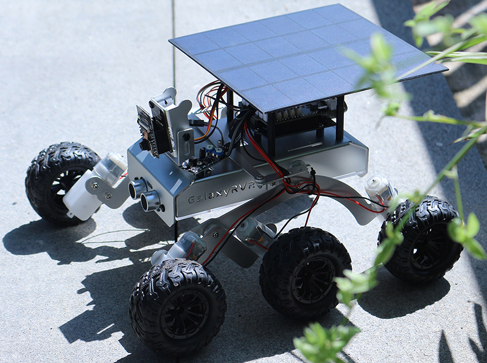
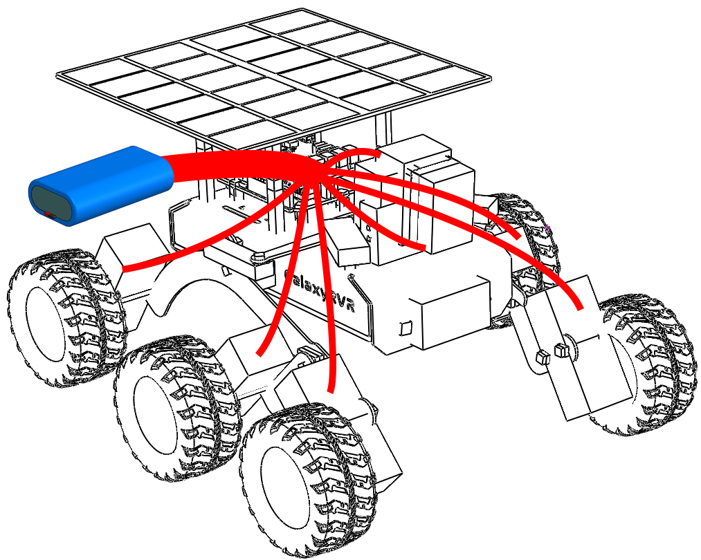
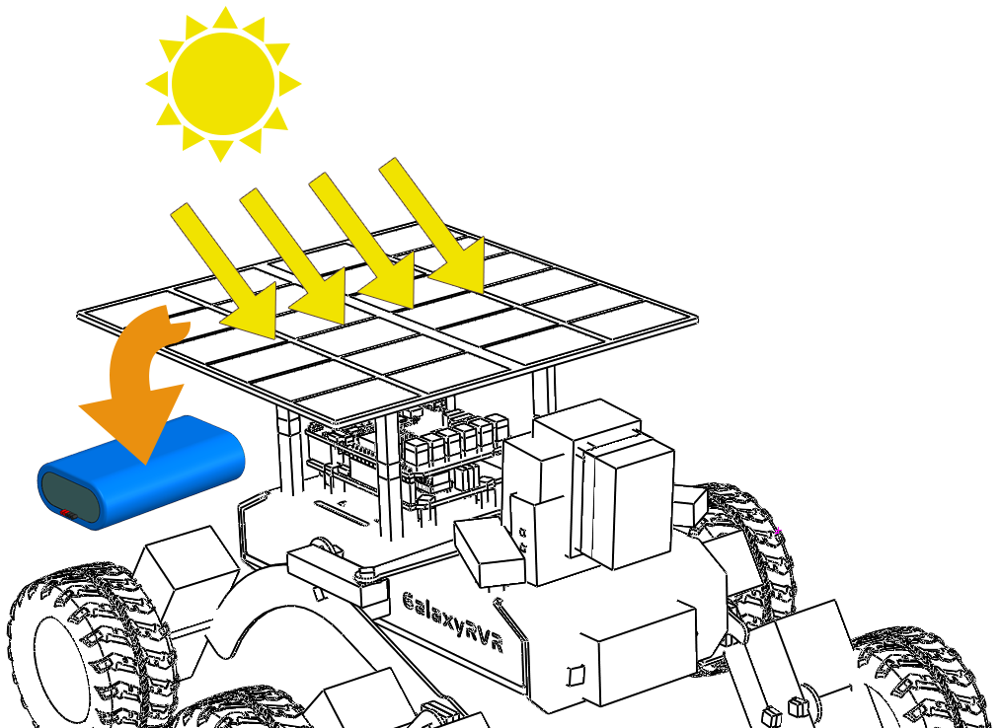

Note
Hello, welcome to the SunFounder Raspberry Pi & Arduino & ESP32 Enthusiasts Community on Facebook! Dive deeper into Raspberry Pi, Arduino, and ESP32 with fellow enthusiasts.
Why Join?
Expert Support: Solve post-sale issues and technical challenges with help from our community and team.
Learn & Share: Exchange tips and tutorials to enhance your skills.
Exclusive Previews: Get early access to new product announcements and sneak peeks.
Special Discounts: Enjoy exclusive discounts on our newest products.
Festive Promotions and Giveaways: Take part in giveaways and holiday promotions.
👉 Ready to explore and create with us? Click [here] and join today!
Lesson 12: Investigating the Mars Rover Energy System
Welcome to the final lesson of our Mars rover exploration journey. This time, we are going to delve into the heart of the rover - its energy system.
When we think about exploring distant planets like Mars, one of the most crucial aspects to consider is energy. How do these rovers power themselves in such harsh and remote environments? In this lesson, we’ll explore this fascinating topic and learn how rovers, like our Mars rover model, harness and manage energy.
We’ll investigate the working principles of battery and solar panel and even get our hands-on practice in installing and using these power sources on our rover model. Furthermore, we’ll take our skills a notch higher by using Arduino to monitor the battery level.
{kind=link}

Learning Goals
Understand the working principles of batterry and solar panel.
Practice installing the solar panel on the Mars rover model.
Learn how to use Arduino to monitor battery level and the charging status of solar panel.
Materials needed
Mars Rover model (equipped with all components, except for solar panel and bottom plate)
Solar panel and bottom plate
Arduino IDE
Computer
Course Steps
Step1: Introduction to the Mars Rover’s Energy System
Just as our bodies need a constant supply of energy to function, our Mars Rover needs a way to store and generate power for its exploration missions. Imagine the Rover’s energy system like the heart in our bodies. Just as our hearts pump blood to all parts of our body, supplying necessary oxygen and nutrients, the Rover’s energy system keeps energy flowing to every part of the Rover, ensuring it can perform its tasks smoothly.
The main components of this energy system are the batteries and the solar panels, working in tandem to ensure the Rover can operate at all times, day or night.
The role of the batteries in the Rover’s energy system is similar to the role of energy storage in our bodies. Just as we need to store energy for use when active, the Rover needs a way to store energy for its exploration missions. The energy stored in the batteries is continuously dispatched to various parts of the Rover, allowing it to carry out its tasks systematically.
{kind=link}

But what happens when the energy in the batteries runs out? How does it replenish its energy stores? This is where the solar panels come into play.
Much like trees absorb sunlight for photosynthesis to create food, our Mars Rover uses solar panels to harness energy from the Sun, converting it into electricity that is stored in the batteries for use. Each solar panel is made up of many smaller solar cells. These cells are composed of a material that can convert light into electricity – a process called the photovoltaic effect. When sunlight hits the cells, they generate an electric current that can be used immediately or stored in the Rover’s batteries for later use.
{kind=link}

However, harnessing solar energy on Mars is not as easy as it sounds. Dust storms can reduce the amount of sunlight reaching the panels, and the weaker Martian sunlight (compared to Earth’s) means that the panels generate less power than they would here at home. Despite these challenges, solar power is still the most practical and efficient way of powering our Mars Rover.
But how do we know when the solar panels are doing their job and when the batteries are getting low on power? This is where our Arduino comes in. In the next section, we will learn how to use Arduino to monitor the charging and discharging of the Rover’s batteries.
Step 2: Mounting the Solar Panel on the Mars Rover
Before we begin this step, we need to have our Mars Rover model, a solar panel, and the cables necessary to connect the solar panel to the Rover’s power system.
This is a process that allows us to put theory into practice and truly appreciate the charm of Science, Technology, Engineering, and Mathematics (STEM) education. Let’s get started!
Step 3: Programming to Monitor Battery Voltage and Charge
Now that we have installed the solar panels on our Mars Rover model, the next step is to monitor the voltage and charge of the battery through programming.
This code effectively creates a simple battery monitor, which is particularly useful in applications like the Mars Rover where power management is crucial. It will allow you to monitor the state of the battery, helping you understand when the Rover needs to be recharged or when power-consuming tasks should be scheduled.
Sure, let’s break down the different parts of this code:
This line is defining
BATTERY_PINas the analog pin A3, which is where the battery voltage will be read from.#define BATTERY_PIN A3This function calculates the battery’s voltage. It first reads the analog value from
BATTERY_PIN, then converts it into voltage. Because the Arduino’s analog-to-digital converter (ADC) operates on a scale of 0-1023, we divide the raw reading by 1023. We then multiply by 5 (the reference voltage of the Arduino) and by 2 (assuming a voltage divider of 2), to convert this to a voltage reading.float batteryGetVoltage() { // Reads the analog value from the battery pin int adcValue = analogRead(BATTERY_PIN); // Converts the analog value to voltage float adcVoltage = adcValue / 1023.0 * 5 * 2; // Rounds the voltage to two decimal places float batteryVoltage = int(adcVoltage * 100) / 100.0; return batteryVoltage; }
The raw ADC reading from the Arduino’s analog-to-digital converter is divided by 1023 to convert it into a fraction, then multiplied by 5 to translate it into voltage, as Arduino uses a reference voltage of 5 volts.
However, because the battery voltage higher than Arduino’s maximum input voltage, a resistor is used to protect the Arduino. Therefore, we multiply the ADC voltage by 2 to counteract the effect of the resistor and obtain the correct battery voltage.
This function calculates the battery’s percentage of charge based on its voltage. It uses the
mapfunction tomapthe voltage value (ranging from 6.6 to 8.4 volts) to a percentage (ranging from 0 to 100).uint8_t batteryGetPercentage() { float voltage = batteryGetVoltage(); // Gets the battery voltage // Maps the voltage to a percentage. int16_t temp = map(voltage, 6.6, 8.4, 0, 100); // Ensures the percentage is between 0 and 100 uint8_t percentage = max(min(temp, 100), 0); return percentage; }
Step 4: Putting the Mars Rover’s Energy System to the Test: Indoor and Outdoor Runs
Having coded our battery monitoring system, it’s now time to set the Mars Rover into action. Begin by charging the Rover to full capacity, and plan for two 30-minute exploratory missions - one indoors, and another outdoors in the sunlight. Record the initial battery level before each mission, and compare it with the battery percentage at the end of each test. The following table serves as a useful template to keep track of your findings:
Sun Shine |
In Room |
|
|---|---|---|
Start Battery Percentage |
||
End Battery Percentage |
Observe the difference in the battery levels following each test. Did the Rover’s battery last longer when it was basking in outdoor sunlight? What conclusions can we draw about the efficacy of the solar panel from this observation?
Understanding these variances will help us better comprehend how solar energy can effectively power a Mars Rover, even in remote, harsh environments such as those found on the Martian surface.
Step 5: Reflection
Throughout this lesson, we’ve focused on understanding the crucial role of the energy system in the Mars Rover, and the mechanisms to monitor the Rover’s remaining energy. The solar panel-based energy system not only powers the Rover but also underlines the importance of renewable energy sources in space exploration.
With the knowledge you have now, think about the real-life implications of this system. Consider the challenges that a solar energy system might encounter on Mars. How might extreme temperatures, dust storms, or long periods of darkness affect the energy supply? What solutions could you propose to tackle these obstacles?
Step 6: Looking Forward
Now that we’ve given our Mars Rover the ability to move, it’s time to let it start its exploration journey! You can let it wander in various terrains mimicking the Mars environment.
For instance, you can let it climb over a heap of stones.
Or let it navigate through a thick grassy patch.
Or set it on a course on a gravel terrain full of stones.
However, please note that if the obstacle is too high, the rover might not be able to climb over it.
These varied terrains present unique challenges for the rover, just as they would for a real Mars Rover. As you watch your rover try to overcome these obstacles, you’re experiencing a small part of what scientists and engineers at NASA do when they send rovers to Mars!
As we conclude our Mars Rover lessons, it’s important to reflect on what we’ve learned. We hope this journey has not only expanded your knowledge and skills but also sparked curiosity and a desire to explore. Whether your Rover roams in your backyard or across the vast expanse of your imagination, the discoveries you make along the way are sure to be extraordinary.